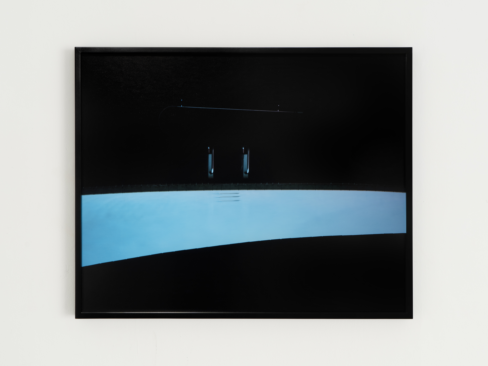
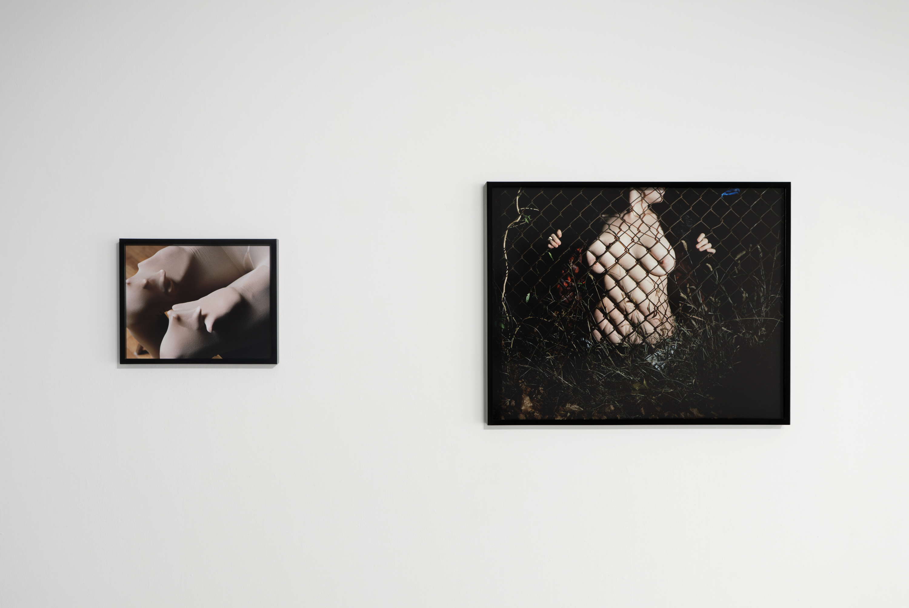
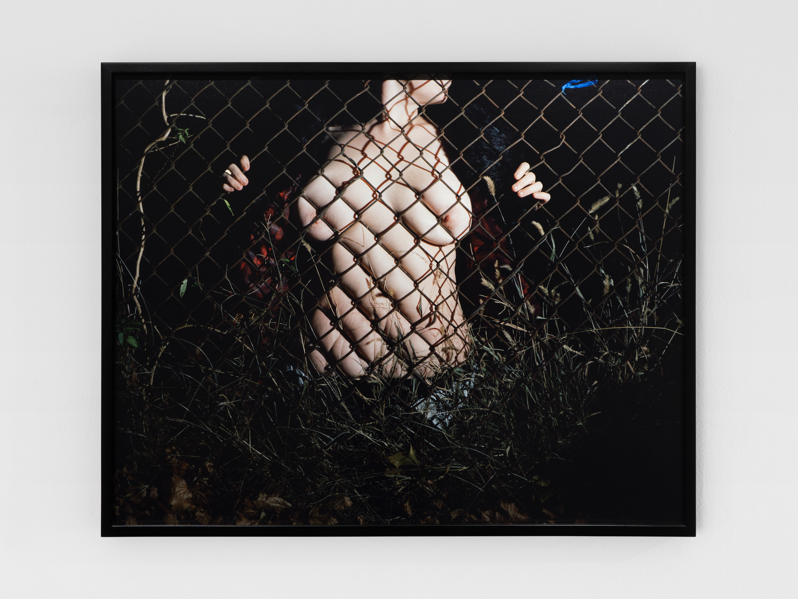
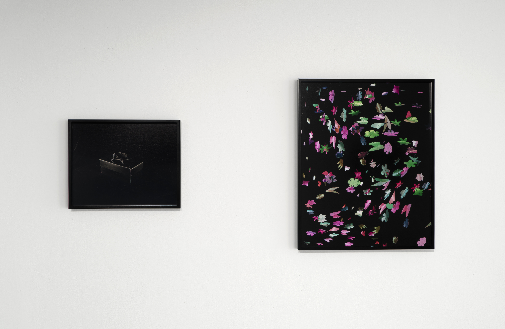
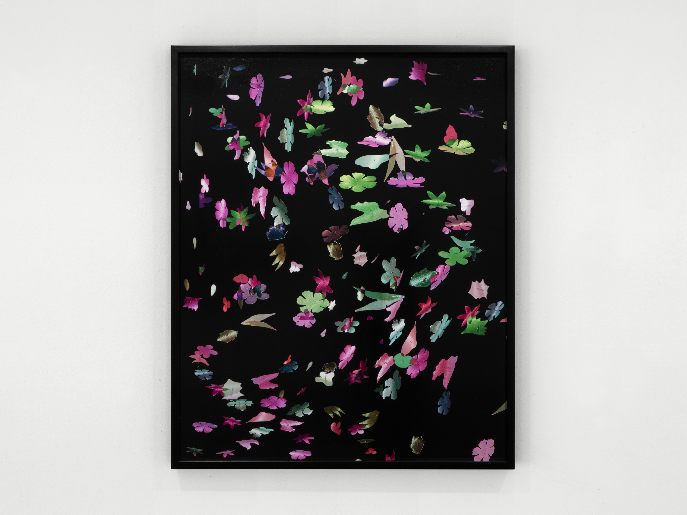

Installation view at Yale School of Art, 2022.

Installation view.
Blue (Middle), 2021, archival pigment print, 32" × 40".
Ripbzee, 2020, archival pigment print, 16" × 20".
O, 2021, archival pigment print, 20" × 27".
#21x62 BONE, 2021, archival pigment print, 32" × 40".
Installation view.
Nylon (Hands), 2021, archival pigment print, 16" × 20".
The Dead Shall Be Raised, 2021, archival pigment print, 32" × 40".
Installation view.
For Lara, 2021, archival pigment print, 20" × 25".
Glitzy Galaxy, 2021, archival pigment print, 32" × 40".
Installation view.
Dear Eileen,
When I look at your photographs, I see two worlds caught in motion. I see a mysterious world and I see a world that is real. And I am, but for an instant, held in place and stopped between the two worlds and left to do what I do best: begin in wonder.
Your subjects come out of the darkness, from where the unseen becomes seeable; form becomes matter; potentiality, actuality.
It's the great distance traveled—creatio ex nihilo—and we all travel that distance twice in a lifetime. Firstly in the beginning, and then secondly in the end.
Your photographs excite this most basic wonderment: It's the body, after all, that is borne from the darkness and then sent back to it. For all of art, the body is the beginning and the end—the alpha and the omega.
While that might seem severe, your photographs aren't merely pitched in darkness. The world also has color, and it shines ever so brightly. Your subjects often shine brightly with the radiance of firey souls.
Interestingly, people who believe in such things as souls usually make one terrible mistake. It's not that our bodies contain our souls, but that our souls contain our bodies.
Our souls are, in fact, bright vessels. And they are the forms that give us our brilliance.
Your photographs show me two worlds in one instant: dark and light, mysterious and real. They make me think of those Platonic forms where, from the darkness, the brilliant souls of things come forth.
With everlasting love,
Your Brother